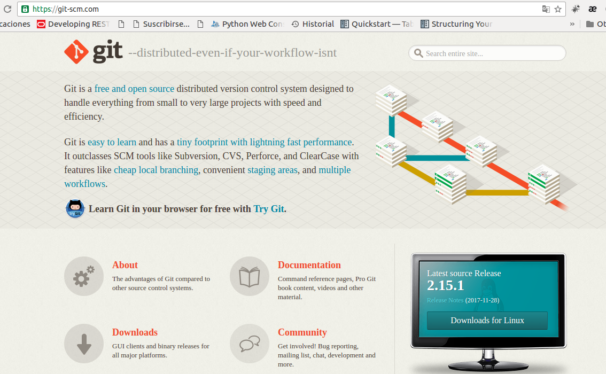
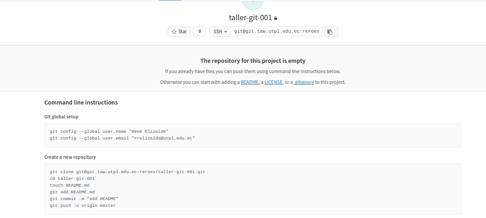

Primeros Pasos en Git
René Elizalde
@reroes
DataLab - UTPL
Tecnologías Avanzadas de la Web
¿Qué es GIT?
- - Sistema de control de versiones desarrollados por Linus Torvals
- - Lo usan en proyecto como: kernel de linux, android, google, facebook, twitter, netflix.
- - Si trabajamos solos, se necesita tener un seguimiento y control del trabajo.
- - Si trabajamos en grupo, necesitamos colaboración entre los participantes.
Sistema que permite registrar los cambios que se pueden producir en en unos o muchos archivos de un proyecto. Permite regresar a versiones previamente guardadas. Listar quienes han realizado cambios en los archivos¿Qué es un control de versiones?
Todos los que tenemos relación con la elaboración de proyectos software, análisis de datos. Si trabajamos con archivos de word, excel, de música, fotografías; se puede usar git para poder llevar el control de los cambios de los archivosDebo usar GIT?
Instalación para Windows
https://git-scm.com 
Instalación para GNU/Linux
apt-get install git
yum install git
Instalación para MacOs
uso de homebrew
Comandos
- git config --global user.name "John Doe"
- git config --global user.email johndoe@example.com
Comandos
- git clone [dirección del repositorio]
- git add .
- git commit -a -m"mensaje"
- git push
- git status
- git pull [actualizar cambios que está en el servidor]
Ingresar a la página web
http://git.taw.utpl.edu.ec
Crear un proyecto en la plataforma GitTaw
Crear un proyecto en la plataforma GitTaw (2)
Crear un proyecto en la plataforma GitTaw (3)

Vincular proyecto con PC
Vincular proyecto con PC (2)
Vista del proyecto vinculado
Vista del proyecto vinculado
Todos Usar Git
Agregar nuevo archivo
- git status/ git add
Agregar nuevo archivo
- Uso de GITIGNORE
Agregar nuevo archivo
- Uso de GITIGNORE
Agregar nuevo archivo
- git status/ git add
Agregar nuevo archivo
- Uso de COMMIT -a -m "mensaje"

Agregar archivo - (servidor)
- Uso de PUSH
Agregar nuevo archivo
- git status/ git add
Vista de Proyecto
Modificacion archivos
Agregar nuevo archivo
Gracias